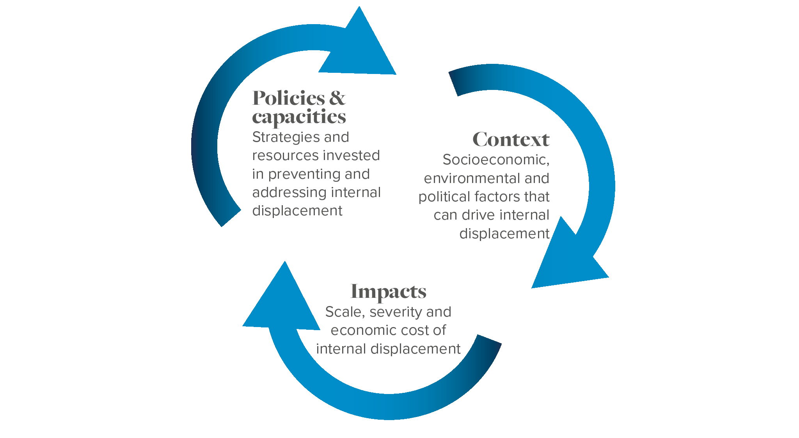

IDMC's first IDI report provided a baseline assessment at the end of 2019. This second report captures the global situation at the end of 2020 and shows that, while moderate progress has been recorded in some areas, significant progress is still to be made.
Internal Displacement Index Results In 2020
Hover over the map to compare overall IDI results for 2019 and 2020 in each country. Click on the tabs to explore the different results for; impacts of displacement, contextual factors, policies and capacities.